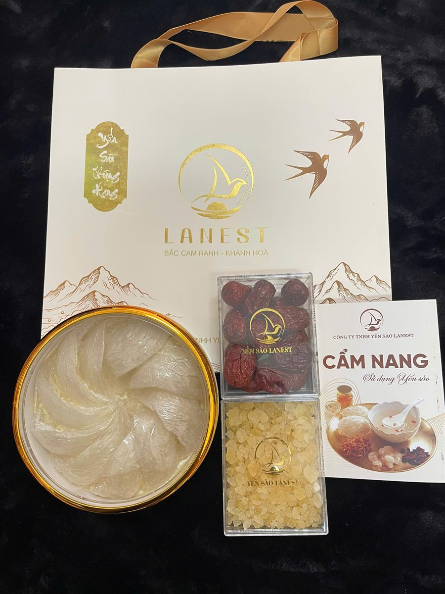
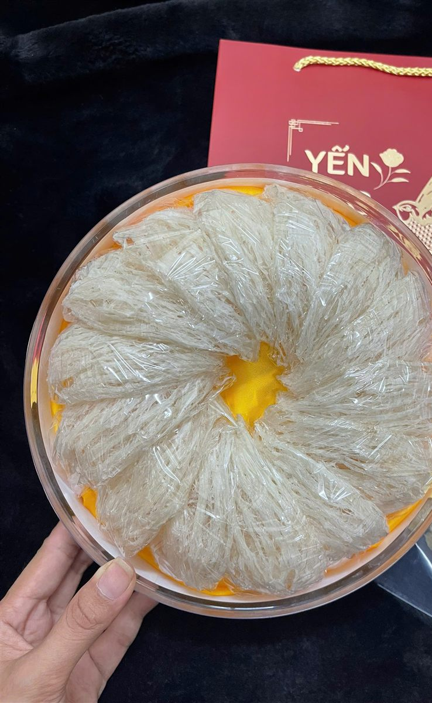

Yến Tinh Chế Hộp 50g Hay 100g: Một Hộp Dùng Được Bao Lâu, Chọn Sao Cho Vừa
Yến Sào Lanest · Đăng ngày 12/11/2026

Câu khách hỏi Lanest nhiều nhất khi mua tổ yến không phải loại nào ngon, mà là 100g yến dùng được bao lâu, mua hộp 50g có đủ không. Trả lời được câu này thì anh chị mua vừa đủ, không để yến mở hộp nằm lâu trong tủ. Bài này tính giúp anh chị: mỗi lần dùng bao nhiêu gram, một hộp đủ cho mấy tuần, và khi nào nên chọn hộp nhỏ hay hộp lớn.
Hộp yến rút lông khô cao cấp kèm táo đỏ, đường phèn và cuốn cẩm nang sử dụng yến sào
1. Yến tinh chế Lanest có hai cỡ hộp: 50g và 100g
Mọi loại yến tinh chế của Lanest, từ yến 100% sợi, thượng hạng, tiêu chuẩn, sợi non, chân yến, yến vụn tới yến rút lông khô, đều đóng hộp hút ẩm theo hai cỡ: 50g và 100g. Hai mốc thời gian anh chị cần nhớ:
- Khi hộp còn nguyên: hạn sử dụng 24 tháng kể từ ngày sản xuất.
- Sau khi mở hộp: nên dùng hết trong khoảng 6 tháng. Riêng yến rút lông khô cao cấp nên dùng trong 30 ngày.
Vì vậy chọn cỡ hộp thực chất là trả lời câu: nhà mình dùng hết hộp trong bao lâu, có nằm trong mốc sau khi mở hộp không.
2. Mỗi lần dùng bao nhiêu gram, một tuần mấy lần
Theo các cẩm nang dùng yến của Lanest, lượng yến khô mỗi lần tùy độ tuổi:
| Người dùng | Mỗi lần | Số lần mỗi tuần |
| Trẻ 1–3 tuổi | 2–3g | 1–2 lần |
| Trẻ 4–12 tuổi | 3–5g | 2–3 lần |
| Người trưởng thành | 5–10g | 2–3 lần |
| Người lớn tuổi, người cần phục hồi | 5–10g | khoảng 3 lần |
Trẻ từ 12 tháng tuổi trở lên mới nên dùng yến. Yến là thực phẩm, không phải thuốc; người đang điều trị bệnh nên hỏi ý kiến bác sĩ trước khi dùng thường xuyên.
3. Tính nhanh: một hộp yến đủ cho bao lâu
Bảng dưới tính với mức 5g yến khô mỗi lần cho người lớn, 3g cho trẻ 4–12 tuổi, dùng 2–3 lần mỗi tuần. Con số chỉ để ước lượng, nhà nào dùng đều hơn thì hết sớm hơn.
| Nhà mình | Lượng mỗi tuần | Hộp 50g | Hộp 100g |
| 1 người lớn | 10–15g | khoảng 3–5 tuần | khoảng 7–10 tuần |
| 2 người lớn | 20–30g | khoảng 2 tuần | khoảng 3–5 tuần |
| 2 người lớn + 1 bé 4–12 tuổi | 26–39g | khoảng 1–2 tuần | khoảng 2,5–4 tuần |
| 1 người lớn tuổi, 3 lần/tuần | 15g | hơn 3 tuần | gần 7 tuần |
Nếu mỗi lần anh chị dùng 10g thay vì 5g, thời gian ở bảng rút còn một nửa. Cách tính rất đơn giản: lấy số gram trong hộp chia cho số gram cả nhà dùng mỗi tuần.

Hộp tổ yến tinh chế đắp hình hoa: lấy từng tổ, đủ một lần chưng, rồi đậy kín hộp ngay
4. Khi nào chọn hộp 50g, khi nào chọn hộp 100g
- Chọn hộp 50g khi mới dùng thử một loại yến, khi trong nhà chỉ một người dùng, hoặc khi mua yến rút lông khô cao cấp cho một người: với mức 10–15g mỗi tuần, hộp 50g vừa vặn với mốc 30 ngày sau khi mở.
- Chọn hộp 100g khi cả nhà cùng dùng, khi đã quen loại yến và dùng đều mỗi tuần. Với yến rút lông khô, hộp 100g hợp khi có từ hai người lớn trở lên cùng dùng, để hết trong khoảng một tháng.
- Mua để biếu: cỡ hộp tùy số người trong nhà người nhận. Nhà đông người thì hộp 100g dùng được lâu hơn, ít phải mua lại.
Còn chọn loại nào (100% sợi, thượng hạng, sợi non, chân yến, vụn) thì tùy cách anh chị thích sợi và ngân sách, xem bài các loại tổ yến.
5. Chia lượng cho dễ khi đã mở hộp
- Lấy đủ một lần rồi đậy kín ngay. Hộp hút ẩm chỉ giữ yến khô tốt khi được đậy lại sau mỗi lần lấy.
- Ngâm theo loại: nước sạch, nước lạnh, không dùng nước ấm hay nóng. Yến vụn khoảng 10 phút; yến sợi khoảng 30–40 phút; chân yến tinh chế 30–45 phút.
- Chưng cách thủy lửa nhỏ khoảng 20–30 phút, không chưng quá lâu. Chi tiết ở bài chưng yến cách thủy bao lâu.
- Muốn khỏi cân: chọn dạng chia viên, mỗi lần lấy theo viên. Xem bài yến vụn và yến chia viên.
Yến đã ngâm hoặc đã chưng mà chưa dùng hết thì cất ngăn mát và dùng trong 1–2 ngày. Đừng ngâm sẵn cả tuần cho tiện.
6. Giữ hộp yến đang dùng thế nào
Yến khô cất nơi khô ráo, thoáng mát, tránh ẩm và nắng trực tiếp, hộp luôn đậy kín. Ghi ngày mở hộp lên nắp là cách đơn giản để nhớ mốc 6 tháng, hay 30 ngày với yến rút lông khô. Hướng dẫn đầy đủ có trong bài cách bảo quản tổ yến.
Câu hỏi thường gặp
100g yến dùng được bao lâu?
Một người lớn dùng 5g mỗi lần, 2–3 lần một tuần thì hộp 100g dùng khoảng 7–10 tuần. Hai người lớn cùng dùng thì khoảng 3–5 tuần.
Mua yến rút lông khô cao cấp nên chọn hộp nào?
Loại này nên dùng hết trong 30 ngày sau khi mở. Một người dùng thì hộp 50g vừa hơn; từ hai người lớn trở lên thì hộp 100g.
Trẻ mấy tuổi dùng được yến tinh chế?
Trẻ từ 12 tháng tuổi trở lên. Trẻ 1–3 tuổi khoảng 2–3g mỗi lần, 1–2 lần mỗi tuần. Cần tư vấn thêm, anh chị gọi 0258 6278 627.